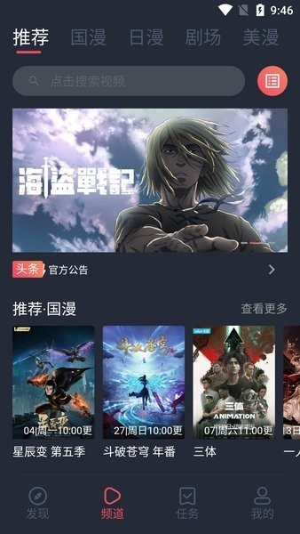

cilicili 到底值不值得掏钱？一个算账党的付费决策账本
从漫币体系到免费签到，把 cilicili 的付费门槛拆碎了算——轻度用、主力用、重度用，三档用户各自该怎么花钱？
它到底值不值得掏钱？
这是我从 cilicili下载 拿到安装包装 cilicili 第三周时脑子里冒出来的第一个问题。作为一个每年在视频和漫画订阅上花超过两千块的人，我对"聚合类动漫 APP 该不该给钱"这件事一直很纠结——给多了像傻子，不给又忍不住追漫画的欲望。
所以我花了一周把它的漫币体系、签到机制、充值档位全部摸了一遍，然后认真算了这笔账。下面是给和我一样纠结的人写的决策参考。
定价拆解：免费版给什么，付费版多什么
先说结论：去 cilicili官网 看过之后确认，cilicili 目前没有硬性的"会员墙"——动漫板块全免费，漫画板块部分章节需要漫币解锁。它的付费逻辑不是按月订阅，而是按使用量付费，这是它和 B 站、腾讯视频这类平台最大的区别。
免费版能拿到的
免费用户有两条路获取漫币：
- 每日签到：连续签到每天 5~20 漫币不等，七天一个周期，全勤能拿 71 漫币
- 阅读任务：每天阅读一定时长或章节数，能再拿约 9 漫币，一周 7 天是 63 漫币
加起来，免费党每周能攒 134 漫币。而解锁一话漫画的价格通常是 88 漫币左右——也就是说，一个免费党一周能解锁一部漫画的一话，还剩 46 漫币可以留到下周或攒着解锁第二话。
其他功能（包括投屏、弹幕、默认播放偏好、全资源访问）免费版和付费版完全一样，没有任何功能限制。
付费版能拿到的
付费不是会员，是漫币充值。大致的充值档位是：
| 充值金额 | 获得漫币 | 每漫币单价 | 对比免费 |
|---|---|---|---|
| 小额（约 6 元） | 约 60 漫币 | 0.1 元/币 | 略贵于免费 |
| 中额（约 30 元） | 约 360 漫币 | 0.083 元/币 | 比小额划算 |
| 大额（约 100 元） | 约 1300 漫币 | 0.077 元/币 | 单价最低 |
充值的漫币是券币，有有效期（通常 30 天），过期作废。这个设计挺鸡贼的——它逼着你充了就得花，不能囤起来慢慢解锁。解锁动作本身是永久性的——去 cilicili文档 翻了一下才确认：花 88 漫币解锁的章节，以后任何时候都能回来看，不会过期，也不会因为你没继续付费而收回。
简单说，付费 = 花钱买漫币 → 用漫币解锁漫画章节 → 章节永久归你。不是订阅制，是买断制（按章节）。
分三类人算账
轻度用户：只看不追，一个月能解锁 4 话免费漫画
特征：上下班路上偶尔点开，主要看动漫番剧，漫画只翻免费部分。追番不超过 3 部，漫画只看不追连载。
这种人完全不用付费。
理由很简单：动漫番剧全免费，免费签到 + 阅读任务每周 134 漫币，一个月 536 漫币，够解锁约 6 话漫画——对于一个"偶尔看看"的人来说，一话一周的节奏完全够用。甚至可以攒两周再解锁一话热门漫画的最新连载，完全没有经济压力。
免费版的唯一代价是：签到断了漫币就少，充值档位的折扣你拿不到。但轻度用户本来就不打算充值，这个代价等于不存在。
主力用户：追番 + 追 2~3 部连载漫画，每周解锁 2 话
特征：有稳定的追番习惯（比如当季新番全追），同时追 2~3 部在连载的漫画，每部每周更新一话以上。
主力用户需要小额充值，但不需要经常充。
按每周解锁 2 话算，需要 176 漫币。免费签到每周 134 漫币，缺口约 42 漫币/周。
两种选择：
方案 A：攒两周再解锁两话。 每周 134 漫币不花，两周后直接解锁 3 话（268 ÷ 88 ≈ 3），一周追三部，另一周忍一下只追一部。代价是追漫画会断断续续，某些热门作品的讨论你可能要晚一周才能跟上。
方案 B：每月充一次小额漫币（30 元档）。 360 漫币 + 每月签到 536 漫币 = 896 漫币/月，够解锁约 10 话。平均下来每话成本约 3 元，每话 88 漫币的单价是充值赠送的，实际花的钱除以解锁数量，比纯充值划算得多。
我个人建议选方案 B——30 块钱换一个月不间断追漫画的自由，折算下来每天一块钱，这个账不难算。但关键是：只充中额档（30 元），别充大额。因为券币有有效期，主力用户一个月花不完 1300 漫币的话，过期损失会很肉疼。
重度用户：同时追 5+ 部连载漫画，还要看剧场版
特征：同时追 5~6 部漫画的最新连载，对画质有要求，可能还会把番剧投屏到电视上和朋友一起看。日均使用时长超过两小时。
重度用户反而不一定需要付费。
这听起来反直觉，但想一下：重度用户追的漫画多，但每部漫画通常每周只更新一话。就算你追 6 部，每周需要解锁的也就 6 话——6 × 88 = 528 漫币。免费签到每周 134，缺口 394 漫币。
等等，这缺口好像很大？但其实不是。因为 cilicili 的漫币还有别的来源——做任务、邀请好友、参与社区活动都能拿到额外漫币。重度用户停留时间长、活跃度高，自然能触发更多任务奖励。我认识一个朋友，纯靠免费 + 社区任务，一个月能攒到 800+ 漫币，够追 9 话漫画。
如果你实在不想耗精力做任务，那就充一次大额档（100 元），1300 漫币 + 每月签到 536 = 1836 漫币/月，够解锁约 20 话。折算下来每话约 5 块钱——和腾讯视频单集 3 元差不多，但漫画看的内容量和代入感是完全不同的体验。

替代方案：不付钱还有什么路
不想给 cilicili 花钱的人，有三条路：
第一条：只看免费漫画 + 盗版渠道。 这是最简单的，但盗版渠道有个致命问题——画质差、广告多、更新慢。而且现在版权管控越来越严，盗版源说没就没。我以前用过三个盗版漫画 APP，半年内全下线了。
第二条：降低漫画消费频率。 把每周追 3 部改成每周追 1 部，用免费签到的 134 漫币解锁两部（一话 88，两周解锁三部也够）。代价是追漫画的节奏慢了，但总花费为零。
第三条：等"促销"。 cilicili 偶尔会搞限时活动，比如签到翻倍、解锁打折、充值送额外漫币。等活动时再充钱，每漫币的单价能降到 0.06 元以下，和 B 站会员购的折扣价差不多。
结论：三秒对号入座
最后给一个直接的建议，不用纠结：
| 你的情况 | 怎么做 |
|---|---|
| 只看番剧，漫画偶尔翻翻 | 一分不花，免费版完全够 |
| 追 2~3 部连载漫画，不想断更 | 每月充 30 元档，别充更大的 |
| 同时追 5+ 部漫画，或者想省时间 | 先免费 + 攒漫币 + 做任务，不够再考虑充 100 元档 |
| 对漫币有效期没概念 | 小额多次充，每次充完一周内花完，不留券币到过期 |
cilicili 的定价设计其实挺聪明的——它不逼你必须付费，但给你留了"花钱省时间"的通道。对轻度用户来说，免费版的体验已经很好；对重度用户来说，每话几块钱的成本比你等一周讨论慢半拍的心理成本要低得多。
我自己目前是每月充一次 30 元档，加上签到和阅读任务，漫币花不完还能攒一些。说实话，这笔账算下来，每年在 cilicili 上花 360 块，比我之前在 B 站大会员 + 腾讯视频 + 漫画付费上花的钱加起来还省三分之二。
当然，如果你只是追番不追漫画，那真的是一分钱都不用花——这也是 cilicili 最大的诚意：不付费也能用完它 90% 的功能。
至于剩下那 10%（漫画付费章节），就看你追的那部漫画的最新一话，值不值一顿外卖钱了。
关于 cilicili 的漫币机制和版本更新，我也整理了一份开源资料——GitHub 放主仓库、Gitee 做国内镜像、GitCode 留社区副本，三处内容同步更新，方便随时查阅。